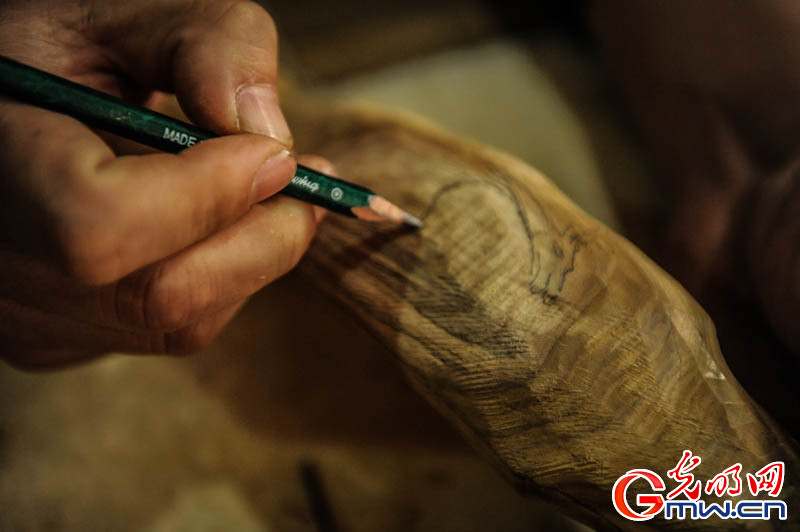

木头上雕出来的千年孔文化：楷木雕刻
2017-12-11 09:38
“神物护兮淑气滋，铁柯偃盖老龙枝。风霜历尽几千载，疑似当年庐墓时。”——《古楷》
2017年12月1日，“致非遗敬匠心”走进山东省曲阜，来到当地非物质文化遗产楷木雕刻的传习所——德圣楷雕工作室。1988年，16岁的褚德胜在孔子故里书画院师从名家学习楷木雕刻。现在的他是山东省手工艺制作大师、国家级非物质文化遗产楷雕代表性传承人。
楷雕传统作品以人物、楷杖和如意为主，图为褚德胜创作的作品《百福如意》，正是楷雕里面最著名的“镂空”技法的极致表现。
其次还有楷木雕刻传统产品，楷木寿杖。图为传统的龙纹寿杖，褚德胜告诉我们，手杖上的纹路还可以有八仙、花鸟等很多传统题材。
褚德胜自主开发创作的《天下第一福》，作品采用浮雕技法、层次分明、做工精湛，字中精雕的八只蝙蝠更是与福字完美融合，该作品曾获全国级别赛事一等奖，现已获国家专利。
在工作室，诸德胜向我们展示了这门古老技艺的制作流程。步骤一，选材。创作一件好的楷木雕作品首先要选取合适的材料，其中木头的纹理和疤瘤即可能影响作品的完成，也可能成为一件作品的独特设计。
2017-12-04 13:26:40
步骤三，整形。除去多余的棱角，在原本木材上做出更精细的形状，除没有花纹外，木头的形状将更加圆滑。

步骤四，画图。先用铅笔在将要雕刻的木头上画出下刀的草图，再用毛笔描画出定版的图样。
步骤五，切削。将木材固定好，然后按画好的花纹开始进行粗加工。
步骤六，刻。再用较小型的刻刀工具进行细致雕刻，将细节表现出来。
步骤七，镂空。对于要制作镂空的地方会使用锉刀进行锉制，诸德胜介绍说，这也是制作中最容易出错的地方，特别是细的枝条部分很容易断裂。
步骤八，打磨。以不同规格的砂纸反复打磨作品，直到表面光滑。
步骤九，刻纹。使用主要以三角型刻刀为主的工具在如意表面进行细小花纹的雕刻，如枝叶、花纹等。
2017-12-04 13:26:40
步骤十一，完成。用竹子或木棍、乳胶等将如意的柄和前端部分链接，也可再加以上蜡、上色等处理。这样一个传统的楷木如意才算完成，制作这样的一个如意会付出大量的时间和精力，因制作精细程度、所用技法的不同，制作时间也各不相同。
楷木雕刻的工具，包括锤子，解木和雕刻的刻刀60多把以上。每个步骤都应用不同的工具，在制作不同大小、类型的作品时，匠人还会自己制作一些实用的工具。
我们发现，在诸德胜的手上有深浅不等，长度不一的疤痕和创伤，他开玩笑的说“这都是学艺必然的第一课”。
讲到楷木雕刻的技艺传承，在学校开设雕刻课程的诸德胜有自己的想法：” 我有很多徒弟最后能坚持下来，真正继承这项技艺的很少。时代不同了，以前师传密授的传承形式不再适合当下，应该以培养大家的兴趣为出发点，首先要让更多人喜欢楷木雕刻，人们才会有兴趣学下去”。 （文/摄 光明网记者冀旭）